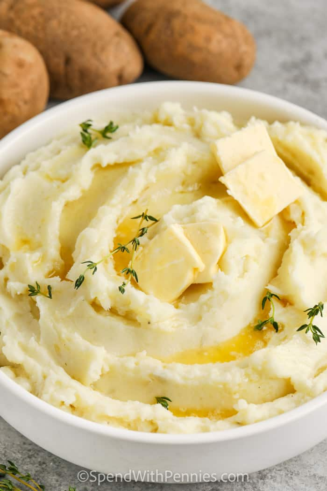

Mashed Potatoes
Home

Description:
This is a delicious, buttery, and creamy mashed potatoes recipe! It has 5 stars and over 1000 reviews!
Ingredients:
- 4 pounds potatoes russet or Yukon gold
- 1/3 cups melted salted butter
- 1 cup warmed cream/Milk
- Salt and pepper
- Optional: You can add extra seasonings for added flavor if you want. A few garlic cloves, some chives, whatever you want.
Some tips for the best outcome:
- Drain well, usually for around 5 minutes to completely drain them, and then put them back into the warm pot to make sure all the liquid is evaporated.
- Mash by hand using a hand masher or potato ricer for the creamiest potatoes. Electric mixers like stand mixers or food processors can work as well, but it can also break down the starches causing a gummy texture if overmixed.
- Don't skimp on the butter! Use lots of salted butter, or unsalted if you want to season youself. This is important for the creamy texture!
- Heat the cream/milk in a small saucepan or in the microwave. This ensures that the potatoes absorb the liquid better.
Steps:
- Peel and quarter potatoes, place in a pot of cold salted water.
- Add cloves of garlic (if using) & bring to a boil, cook uncovered 15 minutes or until fork-tender. Drain well.
- Heat milk on the stove top (or in the microwave) until warm.
- Add butter to the potatoes and begin mashing. Pour in heated milk a little at a time while using a potato masher to reach desired consistency.
- Season with salt and pepper. Serve hot and enjoy!